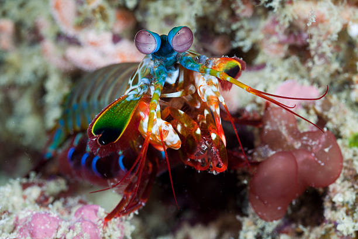
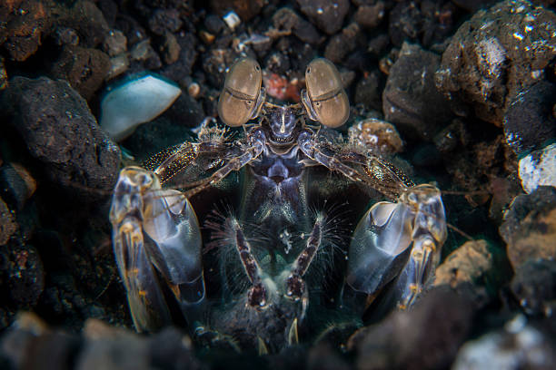

Fatos sobre o Stomatopoda
Apresentação
Stomatopoda, chamados popularmente de tamarutacas ou de lacraias-do-mar
no Brasil, é uma ordem de crustáceos marinhos da subclasse Hoplocarida
que agrupa cerca de 400 espécies, caracterizados pela morfologia da segunda pata torácica.
Podem ser encontrados em quase todo o litoral brasileiro,
mas não são animais fáceis de se observar pelos seus hábitos mais furtivos.
Também conhecidos como esquilas ou lagosta-boxeadora, espalhadas pelas costas dos mares tropicais e subtropicais.
Os estomatópodes são predadores ativos que caçam presas com o auxílio de um sentido de visão
muito apurado. Ele vivem em fundo do mar, são animais exclusivamente carnívoros. O segundo par de patas, são desenvolvidos, servindo
tanto para atacar, quanto para se defender.
Visão
Esses animais possuem o mais complexo sistema de visão de cores do mundo animal, pois enxergam 12 cores primárias, correspondentes aos 12 pigmentos distintos presentes em sua retina.
A Força da "lagosta-boxeadora"
De acordo com a anatomia da sua pata raptorial é possível distinguir entre dois grupos funcionais, as perfuradoras (spearers) ou as esmagadoras (smashers). As maiores esmagadoras, tais como exemplares de Odontodactylus scyllarus, são capazes de desferir um dos mais rápidos e violentos golpes do reino animal, um soco que pode apresentar a velocidade de um tiro calibre .22 (equivalente a 720 Km/h) e uma força de impacto de 60 kg/cm²
